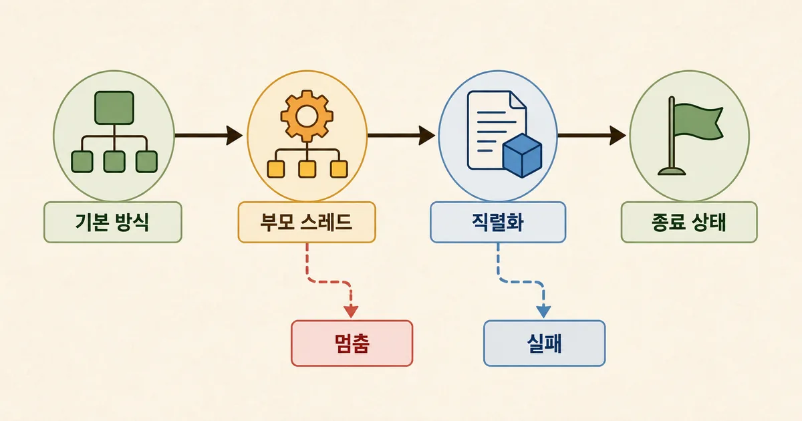
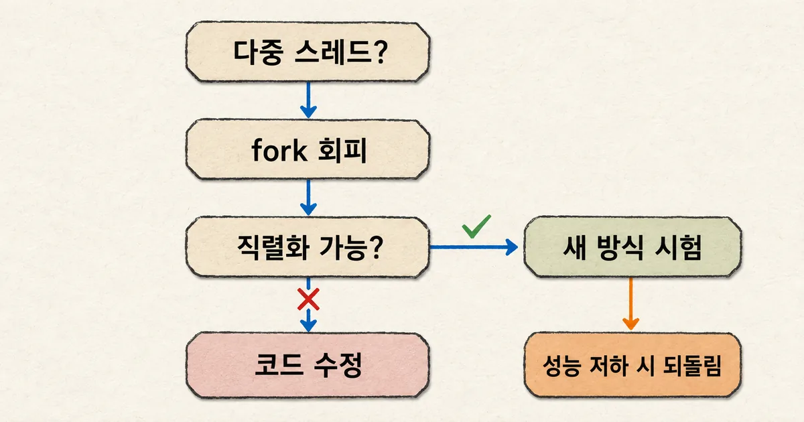

배치 작업의 함수는 끝난 것처럼 보이는데 부모 프로세스가 돌아오지 않거나, 시작 방식을 바꾼 뒤 갑자기 pickle 오류가 날 때가 있다. 같은 멀티프로세싱 문제처럼 보여도 전자는 부모의 잠금과 스레드를 물려받은 멈춤일 수 있고, 후자는 새 인터프리터가 함수를 다시 불러오지 못한 실패일 수 있다. 시작 방식부터 확인하면 코드를 무작정 고치기 전에 두 갈래를 나눌 수 있다.
개발 가이드
30초 요약
- Python 멀티프로세싱 멈춤은 fork가 부모의 스레드·잠금 상태를 물려받은 문제인지 먼저 확인한다.
- spawn·forkserver로 바꾼 뒤에는 작업 함수와 인자의 직렬화, 메인 모듈의 안전한 재실행을 확인한다.
- 가장 빠른 방식을 고정하지 말고 작은 부하 시험의 정상 종료·결과 회수·메모리 변화로 채택과 되돌림을 결정한다.
먼저 알아둘 말
- 시작 방식
- 부모가 새 작업 프로세스를 만들 때 메모리를 복제할지, 새 인터프리터를 띄울지 정하는 방법이다.
- fork
- 부모 프로세스의 메모리 상태를 복제해 자식을 빠르게 시작하는 POSIX 방식이다.
- spawn
- 새 Python 인터프리터를 띄우고 필요한 함수와 인자를 다시 전달하는 시작 방식이다.
- forkserver
- 일반적으로 단일 스레드로 동작하는 비교적 깨끗한 서버가 요청을 받아 새 프로세스를 fork하도록 분리한 POSIX 방식이다.
- 직렬화
- 함수 인자나 결과를 다른 프로세스로 보낼 수 있는 데이터 형태로 바꾸는 과정이다.
실전 가이드 · NAVER D2 · 2026. 9. 1
Python 멀티프로세싱 오류: fork·spawn·forkserver 진단 순서
Airflow 3 도입 PoC에서 드러난 fork의 성능과 격리 한계를 출발점으로, Python 프로세스 시작 방식별 오류를 구분하는 진단 순서와 롤백 기준을 정리했다.
먼저 시작 방식과 부모 스레드를 함께 확인한다
첫 단서는 오류 문구보다 멈춘 위치다. 자식 함수가 로그를 남긴 뒤 부모가 기다리기만 한다면 잠금이나 Queue의 결과 회수 순서를 본다. 자식이 시작과 함께 pickle·AttributeError를 내면 함수와 인자를 새 인터프리터로 전달하는 경계를 먼저 본다.
python --version과 운영체제를 적고multiprocessing.get_start_method()로 기본 방식을 확인한다.- 프로세스를 만드는 부모에서 백그라운드 스레드와 잠금 사용 여부를 확인한다.
- 작업 함수가 모듈 최상위에 있는지, 인자와 반환값이 직렬화 가능한지 확인한다.
- 자식의
exitcode와 예외를 남기고 Queue·Pipe의 데이터를 읽은 뒤join()하는지 확인한다.
이 네 항목은 코드를 바꾸기 전 기준선이다. 같은 저장소라도 Linux와 macOS, Python 3.13과 3.14에서 기본 시작 방식이 달라질 수 있다. 기본값을 모른 채 재현하면 개발 PC에서는 spawn, 운영 서버에서는 다른 방식으로 실행돼 증상이 엇갈린다.

fork는 빠르지만 부모 상태까지 복사한다
fork는 부모의 주소 공간을 복제하고 실제 메모리 페이지는 쓰기 전까지 공유한다. 이미 불러온 모듈도 이어받으므로 시작 비용이 작다.
NAVER D2의 Airflow PoC에서는 자식 프로세스 생성 시간이 fork 약 4.3ms, spawn 약 206.6ms였고 자식 10개의 전체 물리 메모리는 약 120.8MB와 918.2MB로 측정됐다.
이 수치는 fork가 언제나 50배 빠르다는 보편 법칙이 아니다. Airflow 모듈을 미리 불러온 해당 환경의 결과다.
중요한 점은 성능 이점의 출처가 부모 상태 상속이라는 사실이다. 부모에 여러 스레드와 잠금이 있다면 자식은 잠긴 상태만 복제하고 그 잠금을 풀 다른 스레드는 잃을 수 있다.
| 방식 | 새 프로세스가 얻는 상태 | 먼저 볼 위험 | 맞는 출발점 |
|---|---|---|---|
| fork | 부모 메모리의 복제본 | 다중 스레드 잠금·연결 상태 상속 | 스레드가 없는 통제된 POSIX 작업 |
| spawn | 새 인터프리터와 전달된 객체 | 직렬화·메인 모듈 재실행 실패 | 깨끗한 격리가 중요한 환경 |
| forkserver | 일반적으로 단일 스레드인 서버에서 만든 자식 | 직렬화 제약·서버 준비 비용 | POSIX에서 fork 위험을 줄일 때 |
Python 문서는 다중 스레드 POSIX 프로세스에서 fork를 쓰면 3.12부터 경고가 날 수 있다고 설명한다. 3.14에서는 POSIX 기본값을 forkserver로 바꿨다. macOS는 3.8부터 spawn이 기본이며 Windows도 spawn을 쓴다. 환경별 기본값 차이는 설정이 없어도 배포 결과를 바꾼다.
spawn으로 바꿨는데 새 오류가 나는 이유
spawn과 forkserver는 작업 함수와 인자를 직렬화해 새 프로세스에 전달한다. REPL에서 만든 함수, 람다, 함수 안에 정의한 로컬 함수는 자식이 같은 이름으로 다시 찾기 어렵다. 파일 최상위에 작업 함수를 두고 if __name__ == "__main__":으로 진입점을 보호해야 하는 이유다.
import multiprocessing as mp
import os
def square(value):
return os.getpid(), value * value
def main():
available = mp.get_all_start_methods()
method = "forkserver" if "forkserver" in available else "spawn"
ctx = mp.get_context(method)
with ctx.Pool(2) as pool:
print(method, pool.map(square, [2, 3, 4]))
if __name__ == "__main__":
main()라이브러리 코드라면 전역에서 set_start_method()를 고정하기보다 호출자가 mp_context를 넘길 수 있게 두는 편이 안전하다. Python 문서도 라이브러리가 자체 컨텍스트를 강제하면 다른 라이브러리의 잠금과 호환되지 않을 수 있다고 경고한다.
ProcessPoolExecutor도 같은 경계를 따른다. 제출하는 호출과 인자는 직렬화 가능해야 하고 __main__ 모듈을 자식이 불러올 수 있어야 한다. 작업 함수 안에서 같은 Executor나 Future 메서드를 다시 호출하면 교착될 수 있으므로 중첩 풀은 별도 설계로 분리한다.
Airflow에서는 DAG보다 실행 경로를 먼저 본다
Airflow 3의 일반 작업 실행은 Worker가 Supervisor 프로세스를 시작하고, Supervisor가 다시 Task SDK 런타임을 별도 프로세스로 실행하는 구조다. 사용자 DAG 코드에서 시작 방식을 전역 변경하면 어느 fork에 적용되는지 불분명해진다. 실행기와 Airflow 버전의 실제 경로를 먼저 확인해야 한다.
Airflow의 execute_tasks_new_python_interpreter 설정은 부모를 fork하는 빠른 경로와 새 Python 인터프리터를 띄우는 느리지만 깨끗한 경로를 고르는 옵션이다. 기본값은 False다. 다만 실행기와 공급자 버전에 따라 이 설정을 읽는 지점이 다를 수 있으므로 문서와 현재 소스에서 적용 범위를 함께 확인한다.
Apache Airflow 이슈 #71707은 Linux의 Task SDK 자식이 부모에서 물려받은 OpenSSL 잠금 때문에 HTTPS 호출 중 멈출 수 있는 사례를 기록한다. 이는 모든 Airflow 멈춤의 원인이 fork라는 뜻이 아니다. 같은 스택 위치가 반복되고 다중 스레드 부모에서만 재현되는지 확인할 때 쓰는 구체적인 단서다.

증상별로 되돌릴 선을 정한다
| 증상 | 확인할 증거 | 먼저 할 수정 | 되돌림 기준 |
|---|---|---|---|
| 자식 로그 뒤 무기한 대기 | 부모 스레드·잠금 스택·exitcode | fork 회피 컨텍스트로 작은 재현 | 정상 종료가 확인된 이전 실행 경로 |
| pickle·함수 조회 오류 | 함수 위치·인자 타입·메인 가드 | 최상위 함수와 직렬화 가능한 인자 | fork 강제보다 코드 구조 수정 우선 |
| join에서 멈춤 | Queue 크기와 get·join 순서 | 결과를 먼저 소비한 뒤 종료 대기 | 데이터 손실 없는 소비 순서 |
| 처리량·메모리 악화 | 같은 입력의 지연·RSS·실패율 | 워커 수·초기화 비용 조정 | 사전에 정한 SLO 초과 |
Queue에 큰 결과를 넣은 자식을 먼저 join()하면 feeder thread가 버퍼를 비우길 기다리면서 부모와 자식이 서로 멈출 수 있다. Python 문서의 예제도 Queue에서 값을 먼저 꺼내고 그다음 종료를 기다리라고 설명한다. 시작 방식만 바꿔서는 이 순서 오류가 사라지지 않는다.
terminate()도 일반 복구 버튼이 아니다. 프로세스가 잠금·세마포어·파이프·Queue를 사용 중이면 공유 자원을 깨진 상태로 남길 수 있다. 무한 대기를 막는 시간 제한은 필요하지만, 종료 뒤 같은 워커를 재사용할지 전체 풀을 폐기할지까지 정해야 한다.
버전 변경은 기본값을 조용히 바꾼다
Python 3.14의 POSIX 기본값 변경은 기존 코드가 명시하지 않았던 선택을 드러낸다. fork의 메모리 상속에 기대던 전역 객체나 열려 있는 연결은 새 기본값에서 사라질 수 있다. 반대로 다중 스레드 부모의 잠금을 우연히 물려받던 멈춤은 줄어들 수 있다. 둘 다 업그레이드 전 회귀 시험 대상이다.
- 운영체제와 Python 버전별
get_start_method()결과를 배포 로그에 남긴다. - 작업 함수·initializer·인자·반환값의 직렬화 시험을 CI에 넣는다.
- 백그라운드 스레드가 추가되면 fork 사용 지점을 다시 검토한다.
- 같은 입력으로 정상 종료, 결과 회수, 지연, 메모리를 비교한다.
- 전환 실패 시 되돌릴 컨텍스트와 워커 설정을 배포 전 기록한다.
Airflow처럼 실행기가 프로세스 생애주기를 소유하는 시스템은 애플리케이션 코드와 런타임 설정을 따로 검증한다. 로컬 dag.test()는 단일 프로세스로 실행될 수 있어 실제 Worker의 fork·Supervisor 경로를 재현하지 않는다. 운영과 같은 실행기에서 작은 DAG를 보내야 완료 신호를 믿을 수 있다.
마지막 확인은 처리량보다 종료 상태다
전환 완료는 프로세스가 빨리 생긴 순간이 아니다. 같은 입력이 제한 시간 안에 끝나고, 결과와 예외가 부모에 돌아오며, Queue와 자식 프로세스가 남지 않아야 한다. 그다음 지연과 메모리를 비교해 운영 기준을 통과한 방식을 채택한다.
이 순서라면 새 Python 버전이나 Airflow 실행기가 나와도 특정 시작 방식을 신앙처럼 고정할 필요가 없다. 기본값과 부모 상태를 기록하고 작은 작업으로 실패 경계를 확인하면, 정확성을 먼저 지키면서 성능 손실도 측정 가능한 문제로 바꿀 수 있다.
빠른 프로세스보다 먼저 필요한 것은 끝까지 종료되는 프로세스다.
참고한 자료
- Python의 멀티프로세싱과 Airflow, 그리고 관련된 문제 해결기 1편독립 자료
- multiprocessing — Process-based parallelism공식
- concurrent.futures — Launching parallel tasks공식
- Airflow Architecture Overview공식
- Airflow Configuration Reference: execute_tasks_new_python_interpreter공식
- Airflow issue #71707: fork inherited OpenSSL lock deadlock참고 자료
멀티프로세싱 문제를 함수 한 줄의 오류로만 보면 fork를 spawn으로 바꾸거나 그 반대로 되돌리는 시행착오가 길어진다. 운영체제와 Python 버전, 부모의 스레드, 직렬화 경계, 자식 종료 상태를 같은 기록에 남기면 멈춤과 시작 실패가 갈린다. 빠른 생성과 깨끗한 격리 가운데 무엇을 택했는지는 설정 이름이 아니라 작은 부하 시험과 정상 종료 신호로 증명해야 한다. 현재 실행 환경에서 기본 시작 방식과 부모 스레드 수를 기록하고, 같은 입력을 명시적 컨텍스트로 한 번 실행해 종료 코드와 결과 회수를 함께 확인한다.